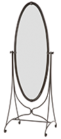
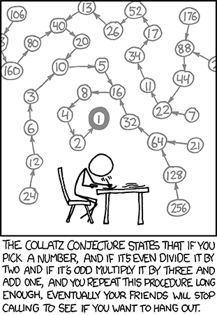
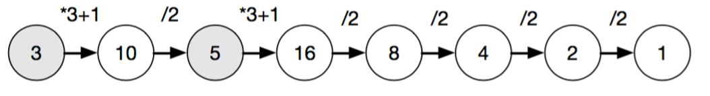

Welkom bij het vak Algoritmiek 2! Deze eerste week gaan we kijken naar een belangrijke techniek die we voor alle komende weken weer gaan gebruiken. Recursie! In alle volgende weken gaan we met recursie te maken hebben, zorg er dus voor dat je goed doorhebt hoe het werkt. (wil je meer informatie over recursie? klik dan hier)
De opdrachten voor dit vak lever je in via GitHub. We zetten elke week een template project voor je klaar, en jouw taak dit blok is om dit project aan te vullen zodat alle unit tests werken. Werken ze allemaal? Dan heb je een 10 voor dit vak, failen ze allemaal? Dan heb je een 0. Zo simpel is het! Sommige opdrachten zijn met opzet wat lastiger, als je daar niet uitkomt kan je ze overslaan en nog steeds veilig voor de 7 gaan.
Om te voorkomen dat je code schrijft die alleen maar werkt op de unit tests die we gegeven hebben houden we ook een paar unit tests achter de hand. Maar als je je goed aan de opdracht houdt hoef je niet bang te zijn dat die zullen failen.
Doe geen rare dingen met het project zoals references/packages/libraries toevoegen, broncode bestanden verplaatsen of extra parameters toevoegen op methodes die we hebben gegeven. We kijken de code automatisch na, en als je dingen aan het project of de solution gaat wijzigen is er een grote kans dat dat fout gaat.
Ga nu naar onderstaande link toe en maak een versie kopie voor het project van week 1, clone het project lokaal en start met de eerste vraag!
Dit zijn de zogenaamde driehoeksgetallen. Bij 0 tel je 1 op om 1 te krijgen. Daar tel je 2 bij op om 3 te krijgen, dan tel je er 3 bij op, dan 4. etc etc. Je kan dit ook zien als het aantal balletjes in een 2d pyramide.
Wat formeler: De functie is gedefinieerd als . Bijvoorbeeld: . Je kan de functie ook recursief definiëren als:
10pt. Schrijf de functie triangular_number_iterative zodat deze werkt op bovenstaande manier. Doe dit op een iteratieve manier (dus met loopjes, niet met jezelf aanroepen)
10pt. Schrijf de functie triangular_number_recursive op een recursieve manier. De functie mag alleen gebruik maken van zichzelf en niet met loopjes werken.
5pt. Schrijf de functie triangular_number_function zonder loopjes en recursie. Op de wikipagina staat een formule waarmee je driehoeksgetallen kan berekenen.
0pt. Test alledrie de functies met grote waardes voor n. Welke manier is het snelst? Welke het langzaamst?
Fibonacci
De rij van Fibonacci krijg je door elke keer de vorige twee cijfers bij elkaar op te tellen, je begint de rij met 0 en 1:
0, 1, 1, 2, 3, 5, 8, 13, 21, 34, ...
0pt. Leg kort uit hoe je de functie op een recursieve manier kan definiëren (gebruik de versie waarbij en )
10pt. Schrijf de functie fibonacci_recursive op een recursieve manier
10pt. Schrijf de functie fibonacci_iterative op een iteratieve manier
5pt. Test weer beide functies met grote waardes. Welke manier is sneller? Geef je antwoord door in which_is_faster de juiste enum waarde terug te geven.
neiaardmo gnirtS

Niet alle recursieve functies zijn saaie rijtjes met getallen. We kunnen ze ook gebruiken om bijvoorbeeld een String om te draaien. Dit kan je doen door de laatste letter geconcateneerd met de recursieve aanroep met de string zonder de laatste letter terug te geven.
Bijvoorbeeld: Als je wordt aangeroepen met string_reverse("Paul") return je "l" met wat string_reverse("Pau") teruggeeft er achter geplakt.
10pt. Schrijf de recursieve functie string_reverse die een String als invoer heeft en de omgekeerde string teruggeeft.
0pt. Wat is de base case van deze functie? (dus het kleinste probleem geval waarbij je niet jezelf meer hoeft aan te roepen)
10pt.Schrijf de recursieve functie is_palindrome die teruggeeft of een woord een palindroom is of niet. Die functie mag weer alleen gebruik maken van zichzelf en geen loopjes bevatten.
Tapijt van Sierpiński
Het Tapijt van Sierpiński is een fractal die je kan maken door acht vierkanten te tekenen rondom een middelste vierkant dat je niet tekent. Dit herhaal je ad infinitum voor elk van deze subvierkanten. (Er is ook een versie waarbij je juist alleen maar het middelste vierkant tekent. Maar die gaan we niet maken, daar staan al teveel voorbeelden van op internet ;) ).
We hebben al een WPF project voor je klaargezet, het enige wat je hoeft te doen om de sierpinski_carpet functie te schrijven. Deze functie wordt aangeroepen met de volgende parameters:
levels: Dit is hoeveel levels diep het tapijt getekend dient te worden. Een niveau van 0 is een vierkant dat de gehele bounds opvult
x, y, width, height: Dit zijn de bounds, het tapijt moet binnen dit gebied getekend worden
canvas: Dit is een object waar je drawSquare() op kunt aanroepen, dat wordt dan getekend in de GUI.
15pt. Schrijf de functie sierpinski_carpet op een recursieve manier.
0pt. Hoeveel niveau's kan jouw computer aan? Hoeveel vierkantjes moet het dan tekenen?
Het vermoeden van Collatz

Het vermoeden van Collatz is dat je voor elk positief getal bij 1 uitkomt als je de volgende procedure toepast:
Deel het getal door 2 als het even is
Vermenigvuldig het getal met 3 en tel er 1 bij op als het oneven is.
Herhaal tot je bij 1 uitkomt
Of je voor elk getal ook echt altijd bij 1 uitkomt is nog een open probleem in de wiskunde, maar daar mag je voor de opdracht wel vanuit gaan. De opdracht is om een functie te schrijven die aangeeft hoeveel stappen er nodig zijn om voor een gegeven getal bij 1 uit te komen.
Voorbeeld: collatz(3) = 7
Omdat je voor 3 de volgende 7 stappen moet uitvoeren om bij 1 te komen:

Als de invoer al 1 is moet je 0 teruggeven: collatz(1) = 0 Voor invoer van 0 of lager moet de functie -1 teruggeven.
10 pt. Implementeer de functie op een recursieve manier in de collatz_recursive() methode
10 pt. Implementeer de functie op een iteratieve manier in de collatz_iterative() methode